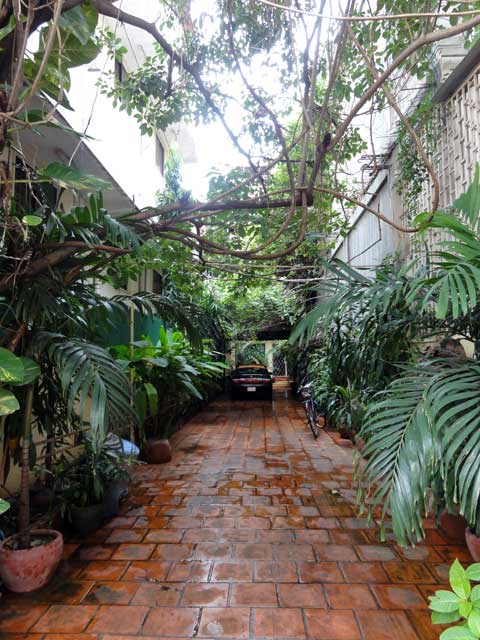
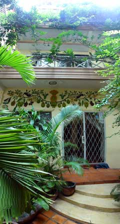
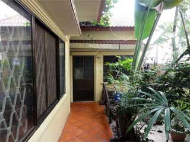
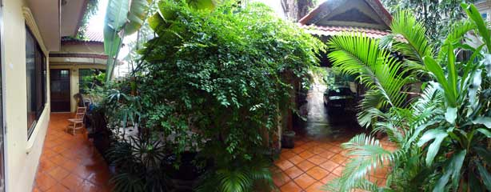
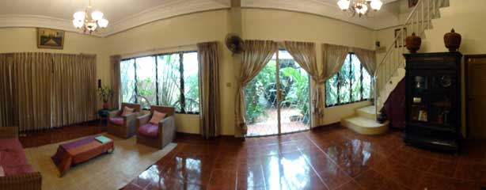
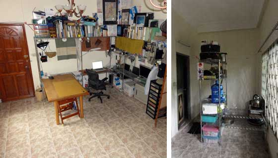
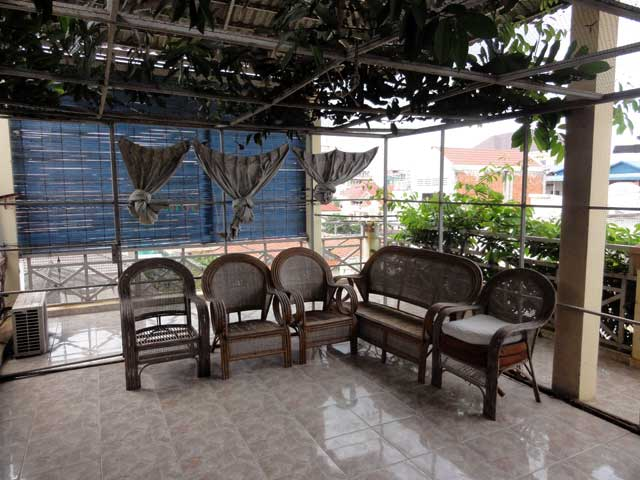
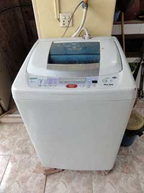
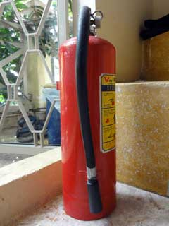

Gate
There is a tree at the gate. The followers are blossoms to welcome.

Pothoses coil around the gate.
The narrow pass throws between buildings.

The stone-paved pass got wet with rain last night.
Promenade
There is a stone-paved pass after the gate. It goes through between buildings like a pass through valley. I call it Promenade.

You can see the gate on the right, and
the entrance of Main House on the left.
Click to see big.

Main House from a summer house.
Main House

There is a door of Main House, and Annex kitchen is on the right side. There is a colorful plaster relief in the upper side of front door.
Main House is a three-story building. There is a roof on Housetop. There are some pods, and tropical fishes are swimming in the pods. There is 2m jasmine tree on the right.

This is Annex. There are a fan palm on the right.

The colorful plaster relief. Click to see detail.
Security
There are trees and plants on Promenade. So, it is difficult to see Main House from out the side. There is barbed wire on the front gate, and our house is surrounded by other houses.
This area has not been flooded since we bought in 2005, but Main House is higher than the ground level.
There are four fire extinguishers.
Internet
Long distance WiFi (512k bps) is available now, but you can change it to the fiber cable (the maximal speed is 4M bps).

A panorama photo from Main House
Ground Floor
Thanks of a tree that surrounds Main House, The ground floor of Main House will not so hot. Phnom Penh is the equator side of the tropic of Cancer. So, Sunlight will come not only from the zenith but also the north. The stairs to go the upper floor are in the right side.

A pnarama photo of the ground floor.
There is a white board for a meeting and a small classroom.

The white board is behind the curtain.
1st Floor
The ceilings of each floor are 3m high.

The bright window on the right is the north side. The window covered by trees is west side.
The west wall of Main House is covered by a tree, and is protected from the southern strong sunlight. There is no window on the west of the second floor, but the half of wall is covered.

The tree will shut out the afternoon sun.
The bathroom on the first floor is the stairs side. The second floor's bathroom is on the other side.

The first floor bathroom.
2nd Floor
The windows on the second floor are at the north and south side. The bathroom is at the other side of stairs.

This is an example layout of third floor. There are some computers on metal rack. If you want, you can cook, but it will make the room hot.
Housetop

Housetop is covered by roof.
There is a sink on Housetop. So, you can enjoy some meal and wash tableware at there. There also restroom, too. There are six restrooms that include in Annex and the outside of Main House. o
Stairs to Houstop.

Annex
There is kitchen in Annex.

Japanese washing machine and refrigerator also available.
 
A washing machine and a refrigerator

Fire extinguisher